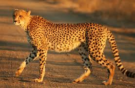

Fastest cat around get caught
Cheetahs once roamed throughout the Middle East and central Asia before hunting all but wiped them out. Today the last 100 or so Asiatic cheetahs live in Iran, where they face habitat degradation, poaching and the loss of their prey from overhunting by humans.There are only about 7,100 cheetahs left in the wild. The cheetah is restricted to just 9% of its historic range and survives in just 33 populations, most of which number less than 100 individuals.The last physical evidence of the Asiatic cheetah in India was thought to be three, all killed in 1947, but a female was sighted in Koriya district, in what is now Chhattisgarh, in 1951.The Asiatic cheetah which was declared extinct in India over 60 years ago. It is the best of the big cats with high successful hunting skills and fastest land mammal on the planet. Simple reason for their extinction is the Asiatic cheetah is disbelieved as a leopard or any other big cat and considered as a threat to people and cattle by villagers and farmers.Kings and hunters killed them for fun, prestige and trophy hunting during 1900’s.But not all cheetahs in India were hunted down.Some Studies show that at least 200 cheetahs were killed in India during the colonial period mainly due to conflicts with sheep and goat herders, and not because they were shot by trophy hunters', states a report by the BBC
Return of the cheetahs
Cheetahs are the only big cat that hunts primarily during the day, so when livestock is killed by a predator, farmers blame cheetahs. Cheetahs end up being killed as farmers try to protect their domestic animals. Fortunately organizations such as the Cheetah Conservation Fund, a partner of the National Geographic Big Cats Initiative, are working with farmers on the ground in places like Namibia, the country with the largest remaining cheetah population to help ensure the cheetah’s survival.In one innovative program, Dr. Laurie Marker has donated Anatolian Shepherd dogs to guard livestock from cheetahs. This prevents farmers from killing the big cats while still protecting their own livelihood. Saving the cheetah means addressing its entire ecosystem, including the people who live in the cheetah’s range. Ninety percent of cheetahs in the wild live outside protected areas, alongside human communities. Securing a future for the cheetah means securing the future of the people who live in cheetah country. For nearly 25 years, Cheetah Conservation Fund has been doing just that – through our celebrated Livestock Guarding Dog program, and our award-winning habitat restoration project, Bushblok. We’re based in Namibia, where the world’s largest population of wild cheetahs lives, and everything we do is aimed at creating a thriving ecosystem so that cheetahs and humans can live together.
cheetahs cant outrun extinction
Cheetahs are known for their speed and are the fastest land animals on our earth! They once roamed much of Africa and Asia but now they are endangered. Because of their loss of habitat, lack of prey to feed on, and their vulnerability to humans, hunters, and poachers has increased their risk of becoming extinct.There are only about 7,100 cheetahs left in the wild. The cheetah is restricted to just 9% of its historic range and survives in just 33 populations, most of which number less than 100 individuals.